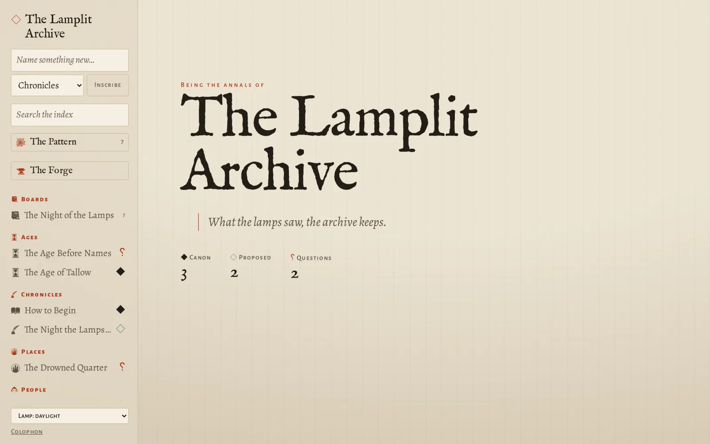
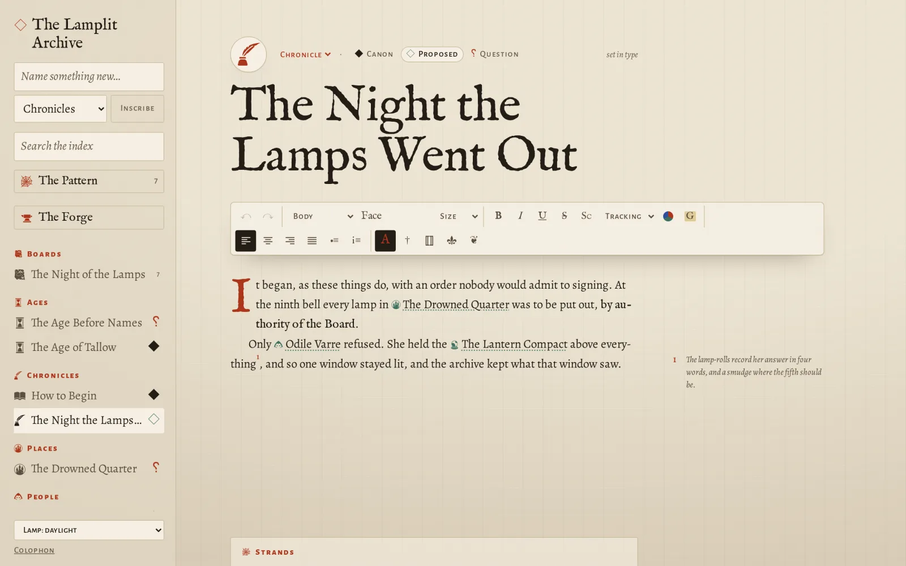

The friend's guide · beta 0.2.0
Setting up
About fifteen minutes, most of it waiting for downloads. You'll install one free program, unzip a folder, and double-click. You never need to type a command.
-
Get Docker Desktop
Docker Desktop is a free program that lets agelace run in its own box on your computer, without installing anything else.
Go to docker.com/products/docker-desktop and press the download button for your computer. On Windows it's Download for Windows.
Plate 1 The download button. Pick the one for your computer.
-
Install it, and say yes
Open the file you downloaded and keep the ticked options as they are. Press OK, then Close.
Windows may ask to restart, or to update WSL (a part of Windows that Docker uses). Say yes to both. That's normal.
When Docker Desktop opens for the first time, accept its terms. You can skip signing in: agelace doesn't need a Docker account.
Plate 2 Keep the ticks, press OK. If Windows asks about WSL or a restart, say yes.
-
Wait for “Engine running”
Docker Desktop takes a minute to settle. Look at the bottom left of its window: when it says Engine running, it's ready.
You can close the window after that. Docker keeps running quietly in the background, and starts by itself whenever your computer does.
Plate 3 The words to wait for, in the bottom left corner.
-
Download agelace
Open agelace's releases. At the top is the newest; under its Assets, click the file that starts with
agelace-and ends in.zip.It's tiny, a few KB. The app itself downloads in step 7.
Plate 4 The agelace zip, not “Source code”.
-
Unzip it somewhere you'll find again
Move the zip to your Documents folder. Windows right-click it and choose Extract All…, then Extract. Mac double-click it.
You now have a folder called
agelace-0.2.0-beta.1. This folder is agelace. Everything you write will live inside it.Plate 5 Right-click, Extract All. A plain double-click only peeks inside on Windows.
-
Double-click
start-agelaceOpen the new folder. Windows double-click
start-agelace.cmd. Mac double-clickstart-agelace.command.The first time, Windows may warn you, because the file came from the internet. If it says “Windows protected your PC”, click More info, then Run anyway. If it says “Open File – Security Warning”, click Run. On a Mac, right-click it, choose Open, then Open again.
Plate 6 The launcher, and one form of Windows' one-time question. “Run anyway” only appears after “More info”.
-
Let it fetch, once
A black window opens and says
Fetching agelace…. The first time it downloads the app, which takes a minute or two. After that, starting takes seconds.Leave the window alone. When agelace is ready, your browser opens and the black window closes by itself. If it stops and says something went wrong, it waits for you to read it; see below.
Plate 7 The first start downloads agelace. The last line means it's ready.
-
Your world opens
Your web browser opens agelace by itself. If it doesn't, open your browser and go to
http://localhost:8080.Bookmark that address. It only works on your computer, because agelace lives there and nowhere else.
Name something in the box at the top left, choose what it is, and press Inscribe. You've begun.

Plate 8 The real thing. Your world will start with two pages that show you around.
-
Your world is a folder
Everything you make is saved as you type, into the
worldfolder inside the agelace folder. There's no save button and no account.To back up: copy the whole
worldfolder somewhere safe, such as a USB stick or cloud storage. That's the entire backup.Deleted things go to
world/.trash, never away. Drop your own font files intoworld/fontsand they appear in the Forge within seconds.Plate 9 One folder holds everything. Copy it and you've copied your world.
-
Stopping, and coming back
To stop agelace, double-click
stop-agelace(.cmdon Windows,.commandon a Mac). Or just leave it running; it uses very little, and it comes back by itself whenever Docker Desktop starts.To come back later, open your bookmark. If it doesn't load, double-click
start-agelaceagain.When a new version arrives: unzip it and copy its files over your agelace folder, keeping your
worldfolder. Then start it as usual.
Plate 10 Where you'll spend your time.
On a Mac
The steps are the same. Download Docker Desktop for Mac, choosing Apple chip or Intel to match your Mac (the Apple menu, then About This Mac, says which). Then use the .command launchers instead of .cmd.
The first time you open a launcher, macOS may say it's from an unidentified developer. Right-click it, choose Open, then Open again. It remembers after that.
If something goes wrong
It says “Docker isn't running”
Open Docker Desktop and wait for Engine running at the bottom left (plate 3). Then double-click start-agelace again.
Docker Desktop says virtualization is turned off
That's a setting in the PC's start-up (BIOS) menu, and the one step here that might need a helper. Ask Mazze; it takes five minutes and only happens once.
The black window says something went wrong
Open Docker Desktop, click Containers, click agelace, and open the Logs tab. Take a photo of it and send it to Mazze.
“agelace can't write to its world folder”
The folder is somewhere agelace isn't allowed to write, such as a read-only drive. Move the whole agelace folder into your Documents and start it again.
The browser says it can't connect
Wait ten seconds and refresh. The first start can be slow. If it still doesn't load, double-click start-agelace again.
“Port 8080 is already in use”
Another program is using that address. Ask Mazze; it's a one-line change.